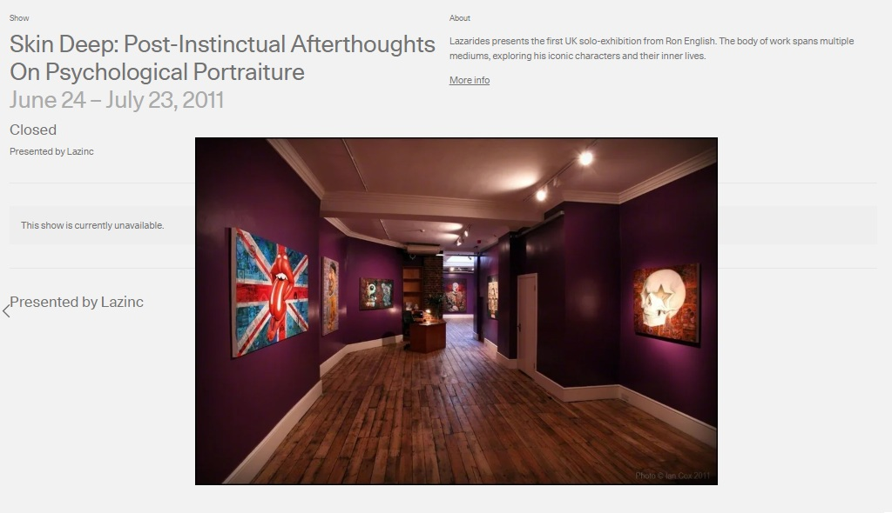
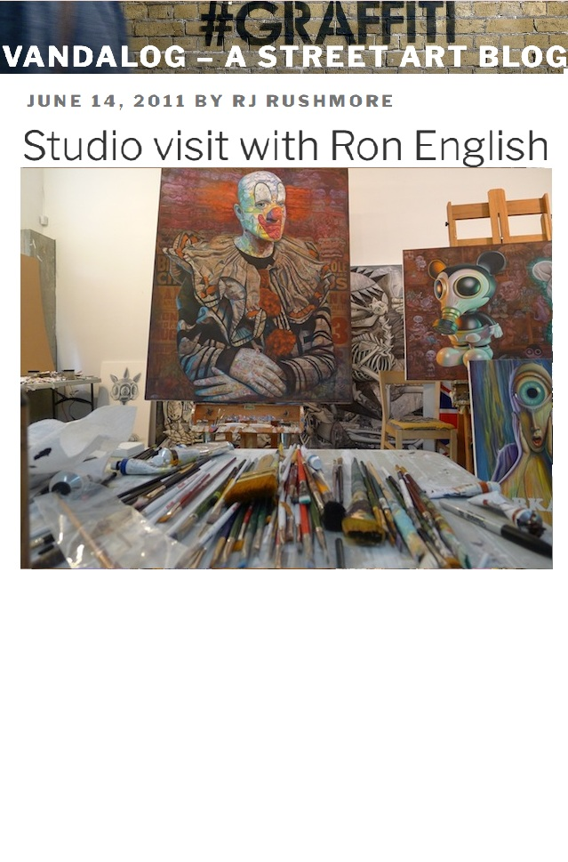
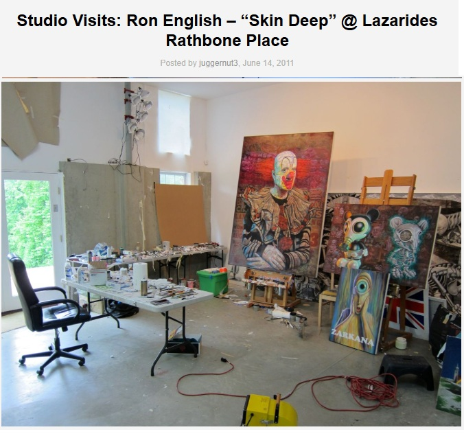
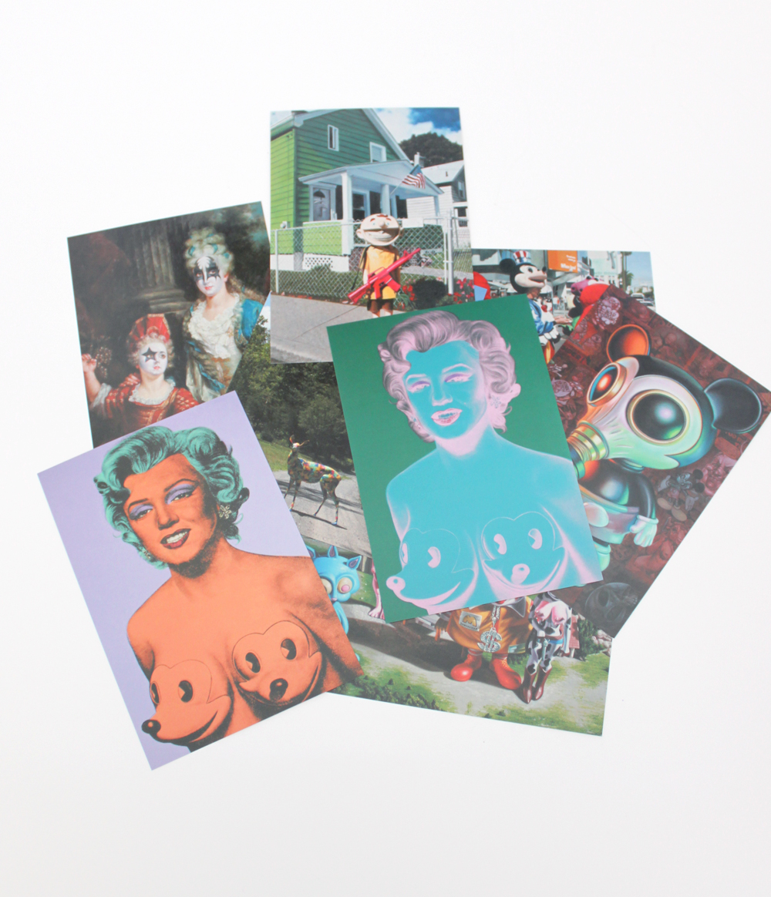
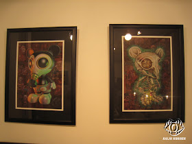

Exhibitions
Skin Deep: Post-Instinctual Afterthoughts on Psychological Portraiture, Lazarides Rathbone, London, United Kingdom, June 24–July 21, 2011.
Literature
Ron English, Death and the Eternal Forever (Korero Press, 2014), p. 133. ISBN 978-0957664920.
Ron English, Status Factory: The Art of Ron English (San Francisco: Last Gasp of San Francisco, 2014), p. 180. ISBN 978-0867197891.
Ron English, Original Grin: The Art of Ron English (Paris: Cernunnos, 2019), p. 329. ISBN 978-2374950938.
Notes
This work appears on Artsy’s show page for Skin Deep: Post-Instinctual Afterthoughts on Psychological Portraiture, presented by Lazinc.
The work also appears in studio photographs published by Vandalog and Arrested Motion in June 2011, and in Arrested Motion’s opening coverage for Skin Deep at Lazarides Gallery.
A portion of the Mousemask Murphy imagery was used in advertisement material connected to Ron English’s first exhibition in Japan and the Mouse Mask Murphy Stealth figure. The local file noted for that advertisement, ron-english-popaganda-japan.gif, is not currently in the provided folder, so it is not included as an image card here.
A portion of this composition was reproduced as one of the images included in the Ron English Postcard Set sold by Clutter; the product page describes the release as a package of eight postcards, each featuring different Ron English imagery, including Mousemask Murphy.
Two print reproductions related to the separate characters in this composition are retained as supporting documentation. Although one file name includes the word “poster,†the supplied note identifies both images as prints.
Related prints or reproductions also appear in Kaiju Korner’s exhibition photographs of Popaganda in Japan, which opened in Tokyo on July 1, 2011 and ran through July 18, 2011.
Ancillary Documentation
The following materials document the work through exhibition pages, studio photography, postcard documentation, print documentation, and related Popaganda in Japan exhibition photographs.





.jpg)

Selected Online Circulation
Selected online documentation related to this work, Mousemask Murphy imagery, related print/postcard material, and later circulation. This list is not exhaustive.